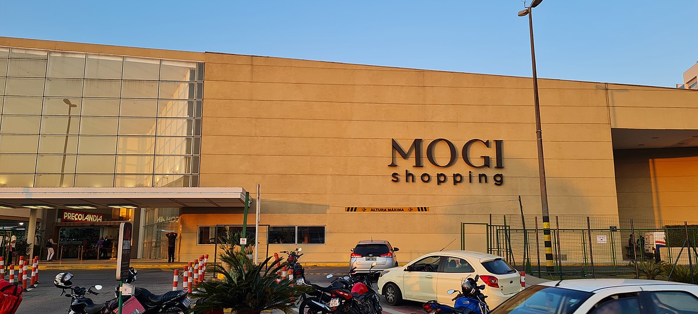

Mogi Shopping
Destacados: El centro comercial más grande y tradicional de la ciudad, con más de 200 tiendas, cine Cinemark, una amplia plaza de comidas y eventos culturales. Ideal para quienes buscan variedad y confort.

Patteo Urupema Shopping
Destacados: Ubicado en el centro de la ciudad, ofrece opciones prácticas para el día a día, con tiendas variadas, servicios y comida en un ambiente moderno y accesible.